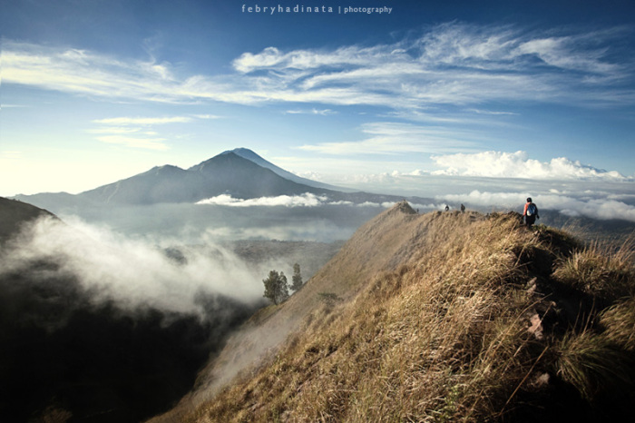

Hiking
Mendaki Gunung Batur
Gunung Batur, gunung tertinggi kedua di pulau seribu pura ini memiliki ketinggian 1.717m. Gunung ini letaknya di kecamatan Kintamani, merupakan gunung nomor dua di bali, setelah Gunung Agung (3.142m). Sudah cerita lama gunung aktif satu ini meletus berkali-kali, hasil dari karya letusannya bisa kita lihat sekarang ini berupa kaldera. Kaldera yang dihasilkan letusannya merupakan salah satu kaldera terbesar dan terindah di dunia (menurut Prof Dr Reinout Willem van Bemmelen 1904-1983). Tepat di kaki gunung ini terhampar Danau Batur, yang kalau di lihat dari atas mirip bulan sabit. Kalau mau dilihat lebih jauh lagi dari atas Gunung Batur selain Danau batur, juga masih ada Gunung Abang yang tepat di belakangnya ada Gunung Agung.
Skydiving
Kejuaraan Dunia Terjun Payung Militer

Dokumentasi peserta World Military Parachuting Championship 2014 kategori ketepatan mendarat (accuracy) bertanding pada hari ketujuh di komplek landasan Bandara Adi Soemarmo, Boyolali, Jawa Tengah. Kejuaraan terjun payung militer dunia ke-38 yang diikuti 406 penerjun payung militer dari 42 negara ini tinggal menyisakan pertandingan untuk kategori accuracy.
Watersports
Watersport Tanjung Benoa

Banyak orang tahu, tempat wisata Bali yang paling sering digunakan untuk aktivitas Bali water sport adalah pantai Tanjung Benoa. Hal yang membuat pantai Tanjung Benoa menjadi pilihan untuk melakukan aktivitas water sport di Bali, karena pantai Tanjung Benoa memiliki gelombang air laut yang tenang dan sangat aman untuk aktivitas water sport di Bali.